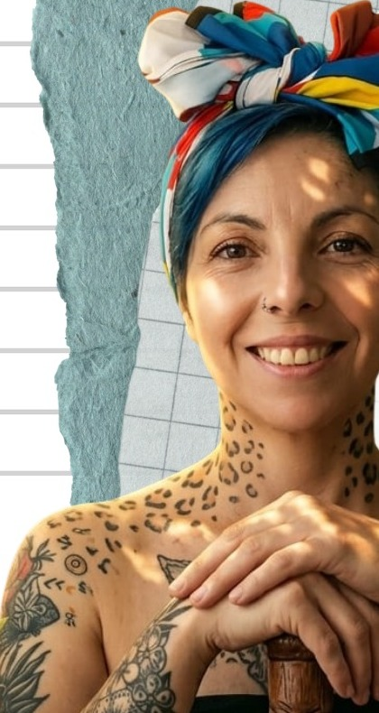

Diseño curricular · Ruta del Estudiante · Metodología replicable · Educación experiencial
CEO Simoné — Creación Arte y Naturaleza · Magíster en Educación (en curso) Universidad de la Sabana · Profesional en Estudios y Gestión Cultural EAN · Mentora de Innovación UP Holding · Ponente TEDx Agua Linda · Coordinadora Técnica Convenio Universidad Nacional + Secretaría de Cultura · Reconocida por LinkedIn Noticias y El Espectador
Acompaño a mentores, educadores y dueños de conocimiento que necesitan convertir lo que saben en una arquitectura pedagógica replicable: pilares, perfiles, Ruta del Estudiante en niveles, sistema de evaluación y material didáctico listo para escalar. 13 años diseñando programas formativos para niños, jóvenes, adultos y equipos corporativos.

Diseño arquitecturas pedagógicas que se pueden replicar: pilares, perfiles del estudiante, rutas en niveles, sistemas de evaluación y material didáctico que convierte el conocimiento de un mentor en una experiencia formativa estructurada. Lo hago desde una posición construida durante más de catorce años en el campo educativo: 13 años como CEO y fundadora de Simoné — Creación Arte y Naturaleza, agencia pedagógica que ha diseñado e implementado programas formativos para más de 30 organizaciones de los sectores corporativo, educativo, cultural y social.
Mi diferencial no es teórico. Soy aspirante al título de Magíster en Educación por la Universidad de la Sabana, Profesional en Estudios y Gestión Cultural por la Universidad EAN, con estudios en Artes Plásticas en la Universidad Nacional de Colombia y Técnica Profesional en Diseño Gráfico (CUN). Cuento además con el Diplomado en Salud Mental en el Trabajo (Universidad de los Andes) y el Diplomado en Innovación Empresarial (Universidad Distrital). Fui Coordinadora Técnica del Convenio Interadministrativo 444/2021 entre la Universidad Nacional y la Secretaría de Cultura de Bogotá, Mentora Junior del programa Moving for Innovation (UP Holding) formando empresas en 4 sectores económicos y 4 departamentos, y diseñadora del programa oficial de Arte y Expresión Plástica de preescolar a undécimo grado del Liceo Católico Campestre durante cuatro años consecutivos.
Lo que ofrezco está validado en aula, comunidad y empresa al mismo tiempo. Soy Ponente TEDx Agua Linda 2014 con la charla «Creer en crear para educar», mi trabajo ha sido reconocido por LinkedIn Noticias y cubierto por El Espectador, y he diseñado experiencias formativas para Nueva EPS, Bancóldex, Imprenta Nacional, Fundación Santa Fe de Bogotá, Cafam, Linktic, Sprach Institute, Pastelería BROT, Centro Comercial Centro Mayor, Parque Colina y Palatino, Alcaldía de Usaquén, Universidad EAN, Universidad Nacional, Liceo Cervantes y más. Dirijo Simoné — mi agencia propia donde diseño, ejecuto y entrego cada programa con metodología propia inspirada en Reggio Emilia, Waldorf y educación experiencial. No hay separación entre lo que diseño, lo que enseño y lo que monitoreo en el aula.
Mi enfoque pedagógico se basa en educación experiencial, arteterapia y diseño curricular sensible al contexto: una metodología que parte del perfil del estudiante real, define pilares no negociables, construye rutas de aprendizaje en niveles, integra el cuerpo y la creatividad como tecnologías de conocimiento, y cierra con sistemas de evaluación verificables. Este enfoque lo respaldan hoy Universidad de la Sabana, Universidad EAN, Universidad Nacional, Universidad de los Andes, Universidad del Rosario, Universidad Distrital, Universidad Minuto de Dios, Secretaría de Cultura de Bogotá, UP Holding, Alcaldías de Usaquén, Bosa, Tunjuelito y Rafael Uribe Uribe, entre otras instituciones. Y se ha aplicado en más de 10 sectores: educación formal y no formal, salud, banca, retail, fundaciones, gobierno, alimentos, publicidad, tecnología y formación corporativa.
Punto central que organiza todos los activos de Simoné: servicios, infoproductos, ofertas pedagógicas y contacto directo.
Conversación públicaReflexiones sobre arte, educación experiencial, bienestar corporativo, salud mental y arteterapia. Reconocida por LinkedIn Noticias.
Galería visualLo que diseñan y experimentan los estudiantes y equipos en los programas de Simoné. Prueba pedagógica real en imagen.
Diseñar una arquitectura pedagógica replicable —pilares, perfiles, Ruta del Estudiante en niveles, sistema de evaluación, guías académicas y estructura institucional— requiere experiencia construida en aula real. Estas son las piezas que ya he diseñado e implementado, que respaldan cada fase del acompañamiento.
Especialista en arteterapia y educación experiencial. He facilitado más de una década procesos de expresión corporal y mapeo emocional con niños, jóvenes y adultos en contextos educativos, corporativos y comunitarios. Residencia Butoh LAB: La Metamorfosis (MANUSDEA, Antropología Escénica) como base técnica del trabajo cuerpo-emocionalidad. Diplomado en Salud Mental en el Trabajo por la Universidad de los Andes (2024). Sé conducir sesiones de 90 minutos que diagnostican habilidades blandas, capacidad de enseñanza y manejo de la frustración — el insumo que el mentor necesita para alinear lo que siente, lo que dice y lo que vende.
13 años al frente de Simoné — Creación Arte y Naturaleza, agencia pedagógica donde defino pilares, perfiles del estudiante y arquetipos formativos para cada programa que se contrata. Magíster en Educación (en curso) por la Universidad de la Sabana — formación dirigida específicamente al diseño curricular y didáctica. Diseñé el programa oficial de Arte y Expresión Plástica de preescolar a undécimo grado del Liceo Católico Campestre articulado con el modelo Enseñanza por Comprensión (EPC), con perfiles diferenciados para cada nivel etario y pilares pedagógicos formales. Sé definir qué se enseña, en qué orden, con qué profundidad, qué celebra el estudiante y dónde se traba.
Diseñé e implementé el programa «Arte como Proyecto de Vida» en la Fundación Cakike con niveles diferenciados para 4-12 y 13-16 años, secuencia de aprendizaje por etapas y componente analítico documentado para cada uno de los proyectos. En CULTIBA — Iniciativas Juveniles de Tunjuelito, estructuré un proceso por etapas en 4 líneas (Reconocimiento, Capacitación, Pedagogía Comunitaria, Diseño de Proyectos) con 25 grupos de jóvenes de 14 a 29 años. Sé construir rutas en 3 niveles (principiante / medio / avanzado), micrologros por etapa y sistemas de evaluación que vuelvan verificable una promesa de aprendizaje.
Mentora Junior del programa Moving for Innovation (UP Holding · 2024): diseñé e implementé la metodología de prototipado de innovación empresarial formando empresas de turismo, economía naranja, servicios y agroindustria en 4 departamentos (Bogotá, Boyacá, Cundinamarca, Santander) — incorporando enfoque de género y diversidad sexual en cada itinerario. Refactor de programas existentes en multinacionales como Nueva EPS, Bancóldex, Imprenta Nacional, Sprach Institute, Cafam y Linktic. Sé reconstruir un curso ya en producción en arquitectura escalera (básico, intermedio, avanzado, premium) sin perder lo que ya funciona.
Técnica Profesional en Diseño Gráfico (CUN) y estudios en Artes Plásticas en la Universidad Nacional de Colombia: combinación poco común en una arquitecta pedagógica. 13 años produciendo material didáctico impreso y digital en Simoné: guías, plantillas, recursos descargables, ilustraciones, cuadernos de bitácora. Experiencia editorial demostrada en revistas académicas: FENADECO (Federación Nacional de Economía), PLOUTOS (Semillero Universidad EAN), Hojas y Hablas (Fundación Universitaria Monserrate). Sé entregar material de aprendizaje, guías académicas y recursos visuales con estándar editorial profesional.
Coordinadora Técnica del Convenio Interadministrativo 444 de 2021 entre la Universidad Nacional de Colombia (Facultad de Artes) y la Secretaría de Cultura, Recreación y Deporte de Bogotá: liquidación del proyecto, diseño del esquema de gestión documental, producción de insumos académicos y garantía de cumplimiento de lineamientos institucionales. CEO de Simoné SAS desde 2013 — sé qué se llama escuela, programa o membresía y cómo se formaliza la documentación. He diseñado perfiles de facilitador, perfiles del estudiante, objetivos por curso y temarios en cada uno de los programas que han pasado por Simoné en 13 años.
Diplomado en Innovación Empresarial (Universidad Distrital · 2024) y experiencia como Mentora de Innovación en UP Holding me dan el marco para diseñar coproducciones donde la arquitectura pedagógica es el activo cobrable de forma permanente. Sé documentar entregables pedagógicos, definir criterios de cumplimiento por fase y construir sistemas de evaluación que vuelvan verificable cada hito. Mi carrera como Gerente de Mercadeo en Plaza Mayor y Jefe de Publicidad y Merchandising en Los Tres Elefantes me dio piso comercial para entender modelos B2B con métricas cruzadas — la pedagogía no opera en abstracto, opera donde el negocio le exige resultado.
No soy una pedagoga que apareció con el boom de la formación digital. Vengo de una trayectoria construida en aulas, fundaciones, ministerios, alcaldías y empresas — diseñando experiencias formativas que se sostienen institucionalmente.
Múltiples roles en paralelo — empresa, mentoría, academia y conferencias. El emprendimiento sostenible es el hilo que los conecta.
Dirección de la agencia pedagógica especializada en diseño curricular, educación experiencial y bienestar corporativo.
Formación postgradual enfocada en diseño curricular, didáctica y políticas educativas.
Prototipado en innovación empresarial para empresas de turismo, economía naranja, servicios y agroindustria en 4 departamentos.
Coordinación gerencial, gestión documental y liquidación del proyecto con la Facultad de Artes de la Universidad Nacional.
«Creer en crear para educar» — charla pública sobre arte, naturaleza y educación experiencial. Trabajo público reconocido por LinkedIn Noticias y El Espectador.
Diseño e implementación del programa oficial de Arte y Expresión Plástica de preescolar a undécimo grado articulado con el modelo Enseñanza por Comprensión (EPC).
Diseño de programas de salud mental laboral y prevención del burnout integrando arteterapia y educación experiencial.
Conceptualización y producción de programas formativos en arte, expresión corporal, bienestar y conciencia ambiental para empresas, fundaciones y entidades públicas.
Cada dominio es una pieza que aplico con clientes, enseño en aulas y convierto en infoproductos y mentorías. Aquí está el catálogo completo de lo que pongo sobre la mesa.
Diseño de rutas formativas en niveles (principiante, medio, avanzado) con micrologros por etapa, secuencia de aprendizaje y contenidos por nivel. Marco probado en programas para 25+ grupos juveniles y aulas formales.
Definición de los 3 a 5 fundamentos que sostienen una enseñanza completa. Construcción del perfil del estudiante ideal por momento de vida y arquetipo. Insumo central de cualquier Documento Maestro pedagógico.
Diseño de mecanismos que vuelven medible la promesa de aprendizaje. Indicadores, rúbricas, micrologros y artefactos de verificación. Base de cualquier propuesta formativa que pueda escalar institucionalmente.
Modelo de educación experiencial inspirado en Reggio Emilia y Waldorf. Cuerpo, creatividad y naturaleza integrados como tecnologías de conocimiento. 13 años aplicado en organizaciones B2B y comunitarias.
Guías, plantillas, recursos descargables, cuadernos de bitácora, ilustraciones y material editorial. Combinación de Diseño Gráfico (CUN) + Artes Plásticas (U. Nacional) + 13 años de práctica editorial educativa.
Procesos de mapeo emocional, cartografía corporal y modelos de comunicación. Residencia Butoh LAB MANUSDEA. Seminario UR KIDS Arteterapia Infantil U. Rosario. Diplomado Salud Mental Laboral U. Andes.
Diseño e implementación de programas de bienestar, habilidades blandas y prevención del desgaste profesional para empresas. Reconocida por LinkedIn Noticias y El Espectador como referente en esta línea.
Documentación institucional de programas formativos: qué se llama escuela, programa o membresía, estructura de gobernanza, perfil del facilitador y temarios oficiales. Base para escalar.
Aprendizaje basado en proyectos, prototipado y aprendizaje activo. Metodología aplicada en el programa Moving for Innovation (UP Holding) con empresas de 4 sectores económicos y 4 departamentos.
Programas, convenios y proyectos formativos en los que la arquitectura pedagógica de Simoné ha generado resultados verificables — con respaldo institucional, métricas reales y reconocimiento público en Colombia.
Funda y dirige Simoné SAS desde enero de 2013 como agencia pedagógica dedicada al diseño de programas formativos, sensibilizaciones y experiencias transformadoras a través del arte, la expresión corporal y la conexión con la naturaleza. Ha trabajado con más de 30 organizaciones de los sectores corporativo, educativo, cultural, gubernamental y de salud — entre ellas Nueva EPS, Bancóldex, Imprenta Nacional, Cafam, Fundación Santa Fe de Bogotá, Linktic, Sprach Institute, Centros Comerciales Centro Mayor, Parque Colina y Palatino, y Alcaldía de Usaquén.
Diseño e implementación del programa oficial de Arte y Expresión Plástica desde preescolar hasta undécimo grado del Liceo Católico Campestre de Bogotá, articulado con el modelo pedagógico institucional Enseñanza por Comprensión (EPC) y los objetivos de fortalecimiento de habilidades motrices y sociales. Cuatro años consecutivos diseñando rutas, materiales didácticos y sistema de evaluación para más de 12 niveles etarios diferenciados.
Mentora del componente de entrenamiento en prototipado de innovación empresarial para el programa Moving for Innovation (UP Holding). Diseñó e implementó la metodología, formando empresas de los sectores turismo, economía naranja, servicios y agroindustria en Bogotá, Boyacá, Cundinamarca y Santander. Integró además el enfoque de género y diversidad sexual en los proyectos de innovación de cada empresa beneficiaria.
Coordinadora Técnica del Convenio Interadministrativo 444 de 2021 entre la Universidad Nacional de Colombia (Facultad de Artes) y la Secretaría de Cultura, Recreación y Deporte de Bogotá. Responsable del esquema de gestión documental, liquidación del proyecto, generación de insumos académicos y garantía de cumplimiento de los lineamientos institucionales. Coordinación del equipo presencial y liaison con la entidad contratante.
Ponente en TEDx Agua Linda 2014 con la charla titulada «Creer en crear para educar» — pieza pública sobre arte, naturaleza y educación experiencial como motores del desarrollo personal y social. Su trabajo ha sido posteriormente reconocido por LinkedIn Noticias y cubierto por El Espectador, especialmente en su línea de bienestar corporativo y prevención del burnout. La charla está disponible públicamente en YouTube.
Tallerista del proceso social en arte, cultura y emprendimiento para el programa Iniciativas Juveniles de Tunjuelito (Contrato 123/2014). Diseñó un proceso por etapas organizado en 4 líneas: Reconocimiento y caracterización, Capacitación en liderazgo y gestión, Pedagogía comunitaria, y Diseño de proyectos sociales y culturales. Implementación con 25 grupos de jóvenes de 14 a 29 años.
Diseño e implementación del programa «Arte como Proyecto de Vida» y «Arte como herramienta de transformación social» en la Fundación Cakike, con niveles diferenciados para niños de 4 a 12 años y jóvenes de 13 a 16 años. Programa complementario al de música existente, dirigido a niños en proceso de restablecimiento de derechos. Cronograma operativo y componente analítico documentado por proyecto.
Profesional de Arte del Centro de Estimulación Temprana en convenios con la Alcaldía de Bosa (proyecto «Infancia Feliz», Convenios 015/2014 y 009/2015) y la Alcaldía de Rafael Uribe Uribe. Diseño e implementación de talleres de expresión artística y conciencia ambiental para niños de 0 a 5 años, sus madres y cuidadoras, integrados a Integración Social e ICBF. Programas entregados con métricas de cumplimiento institucional verificables.
La arquitectura pedagógica es transversal — se ha aplicado en más de 10 verticales. Estos son los sectores donde se ha implementado con mayor profundidad y consistencia institucional.
La arquitectura pedagógica no se construye solo con teoría. Estas son las piezas metodológicas, herramientas y plataformas que combino para diseñar, producir y entregar cada programa formativo.
Conceptos y marcos propios nacidos del cruce entre catorce años en aulas, fundaciones y empresas, y el estudio formal de pedagogía, arte y bienestar laboral. Aquí está la columna vertebral del trabajo.
Marco propio desde TEDx 2014: el acto creativo no es accesorio, es el corazón mismo del aprendizaje. Crear es la prueba de que se comprendió.
El estudiante no recibe contenido — co-construye sentido a través del cuerpo, la creatividad y la conexión con el entorno. Marco operativo, no decorativo.
El arte no es solo expresión. Es una herramienta efectiva, medible y escalable para abordar burnout, desgaste profesional y desconexión organizacional.
Una ruta del estudiante no se diseña en abstracto. Se diseña conociendo el perfil real, sus alegrías, sus frustraciones y los pilares no negociables del oficio que se enseña.
No basta con enseñar — el estudiante debe crear, expresar y verificar lo aprendido. Programas ejecutados con poblaciones de todas las edades en 6 segmentos etarios y 10+ sectores.
Estimulación temprana (0-5), infancia (4-12), adolescencia (13-16), juventud (17-29), adultos corporativos y adultos mayores. Cada uno con perfil propio, ruta de aprendizaje en niveles, sistema de evaluación y material didáctico específico. Validado en aulas, fundaciones, alcaldías, empresas y centros comerciales.
Universidades, gobierno, fundaciones y empresas que han validado, contratado o certificado el trabajo pedagógico de Simoné. Pasa el mouse para verlas en color.
Cobertura mediática y reconocimiento institucional al trabajo en arte, educación experiencial, bienestar corporativo y prevención del burnout — temas en los que soy hoy referente público en Colombia.
«En un entorno que premia la velocidad, el burnout corporativo no es una falla individual, sino un síntoma de desconexión profunda. Mi enfoque no es tradicional: utilizo la creatividad como una tecnología de bienestar para humanizar las organizaciones y fortalecer el tejido emocional de quienes las integran. A través del arte terapéutico, facilito procesos donde las palabras no alcanzan, permitiendo que la intuición y la expresión abran paso a soluciones innovadoras y equipos más resilientes.»
Programas, mentorías, jurados y espacios académicos donde he sido invitado, contratado o reconocido.
Ponente · «Creer en crear para educar»
Reconocimiento al trabajo en bienestar y arteterapia
Cobertura periodística al trabajo de Simoné
Aspirante al título de Magíster en Educación
Coord. Técnica Convenio 444/2021 · Facultad de Artes
Diplomado · Salud Mental en el Trabajo (2024)
Diplomado · Innovación Empresarial (2024)
Profesional en Estudios y Gestión Cultural
Seminario UR KIDS · Arteterapia Infantil
Convenio interadministrativo 444/2021
Voluntaria · 1 año de servicio comunitario
Residencia · Butoh LAB «La Metamorfosis»
Esta es la hoja de vida — la puerta de entrada. Mi pensamiento, infoproductos, servicios y red profesional viven en dos lugares principales. Sigue por donde te resulte más útil.
El punto central de mi ecosistema profesional: enlaces a programas formativos, infoproductos, servicios B2B y B2C, eventos abiertos y contacto directo para mentorías y consultorías pedagógicas.
LinkedIn es donde mantengo la conversación pública sobre educación experiencial, arteterapia, bienestar corporativo y prevención del burnout. Perfil reconocido por LinkedIn Noticias y cubierto por El Espectador.
Acepto un número limitado de acompañamientos pedagógicos con mentores, educadores, conferencistas y líderes que necesitan convertir su conocimiento en una arquitectura formativa que se pueda escalar institucionalmente. Este es el foco de Simoné en 2026:
Escríbeme directamente. Resolvemos en una conversación si tu organización, programa o evento encaja con lo que hago — y si es así, coordinamos fechas y formato.